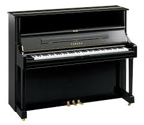

This is a grand piano. Some notable brands that produce high quality grand pianos are Yamaha, Steinway, and Kawai.
Grand pianos usually cost thousands of dollars, sometimes even nearing upwards of $100,000 for a high-end luxury brand.
How is this different from a regular piano? A grand piano has a richer and more resonant sound, and it also has a greater dynamic range compared to upright pianos.
Did you know? A grand piano has 88 keys, containing seven full octaves plus a few extra keys. The piano is considered a percussive instrument because it contains strings that vibrate when each key is struck, caused by small hammers that strike the strings. Modern pianos are a lot louder than older pianos because they are made of a cast-iron frame to hold more tension, while early pianos had wood frames.